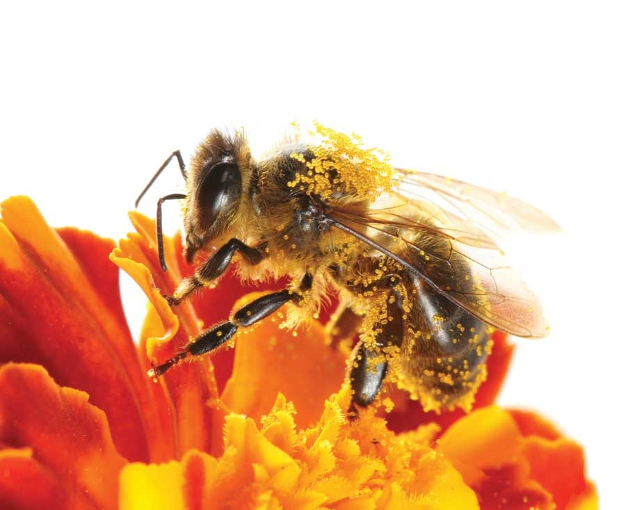

Colony collapse disorder has wreaked havoc on U.S. beekeeping businesses (and the agriculture industry) since its devastating arrival in 2006. The veiled killer entered hives across Japan for the first time earlier this year, affecting 25 percent of the national beekeeping association members. Now the U.S. Environmental Protection Agency (EPA) is being sued by the nonprofit Natural Resources Defense Council (NRDC) for withholding details about the impact of neonicotinoids - a class of widely used pesticides - on honeybees and other pollinators.
The EPA identifies two specific neonicotinoids, imidacloprid and clothianidin, as highly toxic to bees. Both chemicals cause symptoms in bees such as memory loss, navigation disruption, paralysis and death.
Both chemicals have been linked in dramatic honeybee deaths and subsequent suspensions of their use in France and Germany. Several European countries have already suspended them. Last year Slovenia and Italy also suspended their use for what they consider a significant risk to honeybee populations.
While Bayer CropScience, the primary producer of both pesticides, maintains honeybee deaths reported in Europe were caused by unusual application errors, they don’t dispute the proven toxicity of their products. Instead, they maintain bees do not encounter enough of an exposure to cause harm. Now even that assertion is under the microscope.
A report by Maryann Frazier, senior extension associate at Pennsylvania State University, points to a new study from Italy suggests honeybees may be ingesting neonicotinoids at levels 1,000 times higher than that in pollen or nectar via water droplets expressed from the leaves of corn grown from the pesticide-coated seed. This “guttation water” is a common source of liquid for forager bees. The concentrations in the droplets were high enough to kill bees within five minutes of consumption.
Frazier also highlights a study from North Carolina University that found the neonicotinoid Terraguard and the fungicide Procure had synergistic affects when combined, increasing the danger of the neonicotinoid to honeybees to over 1,000 times its original toxicity. The researchers at Penn State are concerned that even sub-lethal doses of these pesticides, while not killing the bees, are impairing their behavior and suppressing their immune systems.
“Their use has increased dramatically over the past few years and they are now the most widely used group of insecticides in the United States,” writes Frazier.
As usage skyrockets, regulation lags behind. Clothianidin was approved in 2003 with the condition that Bayer must provide research on the chemical’s effects on honeybees. The EPA has received the research, but has yet to release all of it - despite requests from the NRDC, thus prompting the lawsuit. The EPA has also provided 163 emergency exemptions for imidacloprid in 26 states, all with little to no research on the sub-lethal affects being reported by researchers in both the US and abroad. (Emergency exemptions allow unregistered use of a chemical for a limited period of time.)
There still isn’t a clear answer to this increasingly desperate honeybee mystery. Neonicotinoids are just one of many chemical killers honeybees are encountering.
The Colony Collapse Disorder Working Team, created by the U.S. Department of Agriculture (USDA), was formed in 2007 to research potential causes. When testing hives for pesticides, they found an overwhelming chemical cocktail.
Diane Cox-Foster, professor of entomology at Penn State and co-director of the CCD Working Team, wrote that the outcome of the tests was “startling.” More than 170 different chemicals, and some individual pollen samples, contained as many as 35 different compounds. But, Cox-Foster notes, “None is likely to be the smoking gun.” Even the healthy colonies contained massive quantities of pesticides, herbicides and fungicides. (Although neonicotinoids weren’t found in this testing, the researchers say they are not discounting them as a possible contributor to colony collapse.)
In addition to the chemical component, the CCD Working Team is looking into a number of other collaborators that have risen to the surface including the Israeli Acute Paralysis Virus, a new strain of the nosema fungus, a widely used miticide called fluvinate, and a poor diet as a consequence of monoculture feeding. Although all have been discounted as singular causes of CCD, they have been identified as serious concerns potentially working in concert with other stressors. And, most recently, the fungicide chlorothalonil has been mentioned as a potential issue to investigate.
While neonicotinoids are encountered outside of the hive, there is another chemical hiding inside that may be having an unprecedented affect: Fluvinates (specifically tau- fluvalinate) are chemicals beekeepers use to keep mites in check. But increased resistance to the miticide and changes in the formula over time are raising red flags for researchers. “Unprecedented amounts of fluvalinate at high frequencies have been detected in brood nest wax and pollen,” Frazier says.
Most beekeepers would consider the common miticide relatively harmless to their bees when properly applied. When the chemical was initially released on the market in the 1980s, the beekeepers’ assumption would have been correct. By the early 1990s a new formula had been released that doubled the toxicity of the chemical, but it was still classified as only moderately toxic to honeybees. By 1995, the EPA reported fluvinate as highly toxic to honeybees. How did this chemical go from safe to seriously toxic to the very pollinators it is supposed to help without much, if any, concern by the EPA?
Researchers at the Penn State department of entomology state in a report released in 2008, “Due in part to the high cost of bringing pesticides to market, companies may make existing pesticides more effective or overcome resistance by changing their chemistry or reformulating them.” They also highlight the fact that the US registration of fluvinate “changed hands” a number of times over the last 20 years, meaning the formulation may very well have changed with each hand-off.
The USDA has stated that one out of every three bites of food we eat is dependent on bee pollination. We have the opportunity to take a look at yet another facet of our industrialized food system. Just how precipitous has feeding ourselves become when a third of our nation’s food supply is reliant on convoys of thousands upon thousands of imported and artificially sustained bees crisscrossing the nation? As one researcher asked Congress, “How would our government respond if one out of every three cows was dying?”
Beekeepers are having some success staving off colony losses by improving the diet of their bees and keeping a closer watch for parasites and infections, says Cox-Foster. She also suggests “simple changes” such as increasing the use of hedgerows could improve both the honeybee population and that of the wild pollinators.
Like the cause, the solution to CCD is going to have to be multi-faceted. There appears to be no single cause that can be directly linked to colony collapse. Researchers think the disorder is the result of many pest/viral/fungal/chemical/stress combinations. Pesticides, although just a piece of the puzzle, are a variable we can control. By eliminating this variable, research could be focused on deciphering the other pieces of the puzzle. Instead, pesticide regulation loopholes are making it nearly impossible to track down the causes of colony collapse disorder.
|
 ISTOCKPHOTO Two common pesticides are being linked to colony collapse disorder symptoms in honeybees. |
|
|